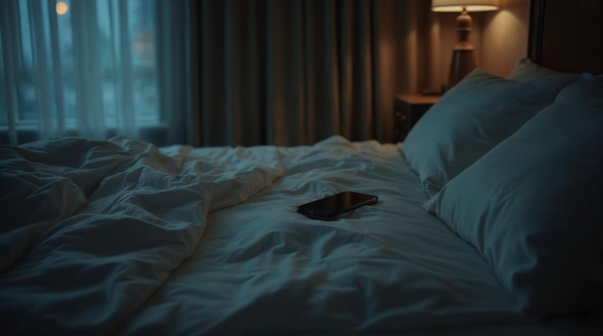
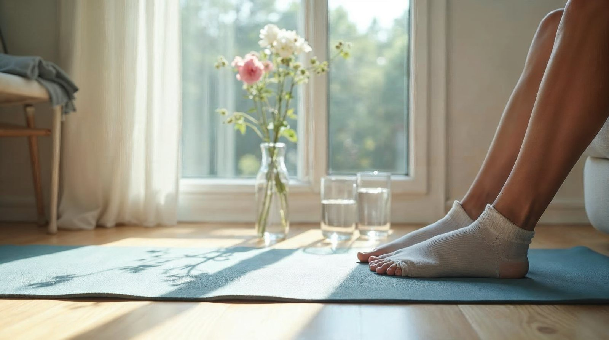

가슴이 두근거리고 불안하면 언제 어떤 상황에서 시작되는지, 카페인과 잠, 갑상선과 심장 질환 가능성을 먼저 확인하고, 가슴 통증과 실신, 숨참이 있으면 바로 응급실을 이용해야 합니다.

밤 11시, 불을 끄고 누웠습니다. 하루 종일 바빠서 몰랐는데, 조용해지니 가슴 속에서 쿵쿵 하는 소리가 유난히 크게 들립니다. 한번 신경이 쓰이기 시작하면 멈추질 않지요. '이거 심장에 문제 있는 거 아냐?' 하는 생각이 들고, 그 생각 때문에 가슴이 더 뛰고, 결국 휴대폰을 들어 검색을 시작합니다. 검색할수록 무서운 말만 눈에 들어오고, 잠은 저만치 달아납니다.
진료실에서 이런 말씀을 자주 듣습니다. "원장님, 제가 너무 예민한 걸까요?" 그 말을 하시는 얼굴에는 걱정과 함께 약간의 부끄러움이 섞여 있습니다. 괜히 별것 아닌 일로 온 건 아닐까 싶으신 거지요. 저는 그 마음을 압니다. 가슴이 두근거리는 건 남에게 보이지 않으니 설명하기도 어렵고, 가족에게 말하면 "피곤해서 그래" 한마디로 끝나기 쉽습니다. 그동안 혼자 얼마나 마음을 졸이셨을까 싶습니다.
먼저 답부터 드리겠습니다. 가슴이 두근거리고 불안할 때는 몸의 원인인지 마음의 원인인지 스스로 가르려 애쓰시기보다, 안전을 위해 심장과 갑상선 같은 몸의 원인을 먼저 병원에서 확인하시는 것이 순서입니다. 검사에서 급한 문제가 없다고 들으셨다면, 그때부터 긴장과 잠, 생활 리듬을 차근차근 함께 살핍니다. 다만 가슴 통증과 숨참, 식은땀이 함께 오거나 정신을 잃을 것 같다면 기다리지 마시고 바로 가까운 응급실로 가셔야 합니다.

왜 가슴이 두근거릴까요
사람의 몸은 위험을 느끼면 싸우거나 도망칠 준비를 합니다. 심장이 빨리 뛰고, 숨이 가빠지고, 손에 땀이 나고, 근육에 힘이 들어갑니다. 아주 오래전 사람들에게는 맹수를 피하게 해 준 고마운 반응이었지요. 그런데 요즘 우리가 맞닥뜨리는 '맹수'는 마감 일정, 시험, 어려운 대화, 끝나지 않는 걱정입니다. 도망칠 곳도 없고 싸울 상대도 없으니, 준비만 하다 말고 몸 안에 긴장이 고여 있게 됩니다. 그 긴장이 두근거림으로 느껴지는 경우가 많습니다.
생활 습관도 크게 한몫합니다. 커피, 에너지 음료, 진한 녹차, 술, 그리고 잠이 부족한 밤. 이것들은 심장을 조금 더 쉽게 들뜨게 만듭니다. 바쁜 주일수록 커피는 늘고 잠은 줄어드니, 두근거림이 그런 주에 몰리는 건 우연이 아닐 때가 많습니다.
그렇다고 모든 두근거림을 마음 탓으로 넘겨서는 안 됩니다. 갑상선 기능이 항진되었거나, 심장 박동이 불규칙한 부정맥이 있거나, 빈혈이 있을 때도 가슴이 두근거릴 수 있습니다. 체중이 이유 없이 줄고, 땀이 많아지고, 손이 떨린다면 갑상선을 한번 확인해 보셔야 합니다. 이런 원인은 검사로 확인해야 알 수 있습니다. 그래서 저는 "괜찮을 거예요"라는 말보다 "검사부터 받아 보셨어요?"라는 말을 먼저 드립니다.
한의학에서는 이렇게 가슴이 두근거리는 느낌을 심계(心悸)라고 부릅니다. 놀란 마음, 지친 몸, 흐트러진 잠이 서로 얽혀 있다고 보고, 두근거림 하나만 떼어 보기보다 그 사람의 하루 전체를 함께 들여다봅니다.

불안이 두근거림을, 두근거림이 다시 불안을
두근거림으로 오래 고생하신 분들께 이야기를 듣다 보면 비슷한 고리가 보입니다. 처음에는 커피를 많이 마신 날이나 큰일을 앞둔 날에 한두 번 두근거렸을 뿐입니다. 그런데 그 경험이 무서웠던 탓에, 그 뒤로는 가슴에 조금만 느낌이 와도 '또 시작인가?' 하고 온 신경이 그쪽으로 쏠립니다. 신경을 쓰면 몸은 다시 긴장하고, 긴장하면 심장은 정말로 더 빨리 뜁니다. 그러면 '역시 이상해' 하는 생각이 굳어지지요.
이 고리에 갇히면 생활이 조금씩 좁아집니다. 지하철을 피하고, 사람 많은 곳을 피하고, 운동도 겁이 나서 그만두게 됩니다. 몸을 아끼려고 한 일인데 오히려 몸은 더 약해지고 마음은 더 작아집니다. 저는 이 이야기를 들을 때마다 그분이 얼마나 조심조심 하루하루를 버텨 오셨을지 생각하게 됩니다.
그래서 순서가 중요합니다. 먼저 병원 검사로 몸에 급한 문제가 없는지 확인해 두면, 다음에 두근거림이 찾아왔을 때 "검사에서 급한 문제는 없다고 했지" 하고 스스로를 다독일 근거가 하나 생깁니다. 그 근거 하나가 고리를 느슨하게 만드는 첫걸음이 되기도 합니다. 물론 그 뒤에도 불편이 이어진다면 혼자 참지 마시고 다시 상담받으시면 됩니다.
진료실에서 자주 보는 모습들
누구 한 분의 이야기가 아니라, 두근거림으로 오시는 분들에게서 자주 겹쳐 보이는 장면을 적어 보겠습니다.
예를 들어 마감이 몰린 주에 커피를 하루 서너 잔씩 마시며 버티는 직장인이 있습니다. 낮에는 일에 쫓겨 몰랐는데, 밤에 누우면 가슴이 두근거려 잠이 안 옵니다. 잠을 못 자니 다음 날 또 커피를 찾게 되고요. 이런 분께는 커피를 몇 시에 몇 잔 마셨는지, 몇 시에 잠들었는지를 나란히 적어 보시자고 말씀드립니다. 적어 보면 의외로 오후 서너 시의 커피 한 잔이 밤까지 이어지는 경우가 보이기도 합니다.
예를 들어 시험 날짜가 다가오는 수험생은 책상 앞에만 앉으면 가슴이 뛰고 숨이 답답하다고 합니다. 공부를 해야 하는데 몸이 말을 안 들으니 더 초조해집니다. 이럴 땐 공부 시간표만큼이나 쉬는 시간과 잠이 중요합니다. 쉬는 10분 동안 숨을 길게 내쉬는 연습을 해 보자고 권합니다.
예를 들어 밤에 누우면 심장 뛰는 소리가 크게 느껴져 걱정이라는 어르신도 계십니다. 이런 경우에는 드시는 약이 무엇인지, 최근에 심전도 검사를 받으셨는지 먼저 확인하고, 필요하면 순환기내과 진료를 먼저 받아 보시도록 안내합니다. 나이가 들수록 몸의 원인을 먼저 짚어 보는 일이 더 중요하기 때문입니다.
자주 하시는 오해
"검사에서 이상 없다는데 계속 두근거리면, 결국 제가 예민한 거죠?" 이렇게 자책하시는 분이 많습니다. 그렇지 않습니다. 긴장, 잠 부족, 카페인만으로도 실제로 두근거림을 느낄 수 있습니다. 검사가 깨끗하다는 건 급한 몸의 문제가 보이지 않는다는 뜻이지, 느끼는 불편이 가짜라는 뜻이 아닙니다.
스마트워치에 찍힌 맥박 숫자만 보고 안심하거나 겁을 먹는 분도 계십니다. 기기의 숫자는 참고하기에 좋지만, 불편이 이어진다면 심전도처럼 병원에서 하는 검사를 받아 보시는 편이 좋습니다. 또 불안할 때 숨을 크게, 많이 들이쉬어야 한다고 생각하기 쉬운데, 너무 빠르고 깊게 쉬면 오히려 어지럽고 손끝이 저릴 수 있습니다. 들이쉬는 숨보다 내쉬는 숨을 길게 하는 쪽이 몸을 가라앉히는 데 도움이 됩니다.
먼저 이렇게 여쭙니다
처음 오시면 저는 이런 것들을 여쭙습니다. 정확하지 않아도 괜찮으니 떠오르는 대로 말씀해 주세요.
- 언제, 어떤 상황에서 두근거리는지(커피 뒤, 긴장할 때, 밤에 누웠을 때, 운동할 때)
- 한번 시작되면 얼마나 이어지고, 어떻게 가라앉는지
- 카페인과 술, 잠은 어떤지
- 갑상선이나 심장 질환 진단을 받은 적이 있는지, 드시는 약은 무엇인지
- 체중이 줄거나 땀과 열감이 늘었는지

일상에서 먼저 해 볼 수 있는 것
가장 먼저 해 보실 수 있는 건 커피와 에너지 음료를 줄이는 일입니다. 하루 한 잔 이하로, 그것도 오전에만 드셔 보세요. 처음 며칠은 머리가 멍하고 아쉬울 수 있지만, 일주일쯤 지나면 밤의 두근거림이 어떻게 달라지는지 직접 보실 수 있습니다.
두근거림이 찾아오면 그 자리에서 할 수 있는 호흡이 있습니다. 4초 동안 코로 천천히 들이쉬고, 6초 동안 입으로 길게 내쉽니다. 서너 번만 해 보세요. 숨을 내쉴 때 어깨가 아래로 내려가는 느낌을 따라가 보시면 좋습니다. 두근거림을 억지로 멈추려 하기보다 '아, 또 왔구나' 하고 알아차린 뒤 숨에 마음을 옮기는 겁니다.
잠은 같은 시간에 자고 같은 시간에 일어나는 것이 기본입니다. 늦은 밤 술 한잔은 잠을 부르는 것 같지만, 새벽에 깨게 만들고 심장을 들뜨게 할 수 있습니다. 하루 20~30분 가볍게 걷는 것도 권합니다. 몸 안에 고여 있던 긴장이 걸음과 함께 조금씩 빠져나갑니다.
그리고 두근거림이 온 날짜와 시간, 그때 하던 일, 얼마나 이어졌는지를 짧게 적어 두세요. 기록을 하다 보면 막연한 불안이 조금은 손에 잡히는 모양이 됩니다. "언제 올지 몰라 무섭다"가 "커피 마신 날 저녁에 잘 오는구나"로 바뀌는 것만으로도 마음이 한결 가벼워지는 분이 많습니다.
하루를 아침, 낮, 밤으로 나누어 보면 조금 더 해 보기 쉽습니다. 아침에는 일어나자마자 휴대폰부터 보기보다 창문을 열고 햇빛을 잠깐 쬐어 보세요. 아침을 거르고 빈속에 커피부터 마시면 오전 내내 가슴이 들뜨기 쉬우니, 따뜻한 물 한 잔과 간단한 아침을 먼저 드시는 편이 좋습니다. 낮에는 한두 시간마다 자리에서 일어나 어깨를 크게 돌리고 숨을 길게 내쉬어 보세요. 긴장은 앉아 있는 사이에 소리 없이 쌓입니다. 오후 두세 시가 넘으면 커피는 쉬어 가시고요.
밤에는 잠들기 한 시간 전부터 불을 조금 어둡게 하고, 일과 관련된 메시지는 내일로 미뤄 두세요. 누웠는데도 가슴이 뛰는 게 느껴진다면, 그 소리를 없애려 애쓰기보다 손을 배 위에 올리고 배가 오르내리는 것을 따라가 보세요. 심장 소리에 쏠렸던 마음이 숨으로 옮겨 가면서 조금씩 가라앉는 분이 많습니다. 그래도 잠이 오지 않으면 잠깐 일어나 조용한 곳에서 책장을 넘기다가 졸릴 때 다시 누우셔도 괜찮습니다.
곁에 있는 가족도 도울 수 있습니다. 두근거림을 호소하는 사람에게 "별거 아니야, 신경 꺼"라고 말하면 듣는 사람은 더 외로워집니다. 그보다는 "지금 많이 뛰어? 같이 숨 쉬어 볼까?" 하고 곁에 앉아 주는 편이 훨씬 힘이 됩니다. 함께 천천히 숨을 내쉬어 주는 것만으로도 혼자가 아니라는 느낌이 전해집니다. 다만 가슴 통증이나 식은땀, 정신이 흐려지는 모습이 보이면 그때는 다독이기보다 바로 응급실로 함께 가 주셔야 합니다.
한의원에서 함께 살필 수 있는 경우
병원 검사에서 큰 이상이 없었는데도 긴장하면 가슴이 두근거리고 숨이 가빠지는 경우, 불안 때문에 잠을 자주 설치는 경우, 두근거림과 함께 속이 예민해 소화가 잘 안 되는 경우라면 한의원에서 함께 살펴볼 수 있습니다.
첫 방문에는 두근거림이 오는 상황과 이어지는 시간, 카페인과 잠, 드시는 약을 먼저 여쭙고, 받으신 심전도나 갑상선 검사 결과가 있다면 함께 봅니다. 그리고 양손을 내어 달라고 말씀드립니다. 양쪽 손목을 차례로 짚어 맥이 빠른지 느린지, 고른지, 힘이 어떤지 살피면서 요즘 잠은 몇 시간쯤 주무시는지, 식사 뒤 속은 편한지, 손발은 차지 않은지 여쭙니다. 혀를 보여 달라고 할 때도 있습니다.
필요하다고 판단되면 혈압과 맥박을 재거나 원내 혈액 검사로 기본 수치를 확인하고, 심장 검사가 먼저라고 보이면 순환기내과를 안내합니다. 가져오신 기록이 있다면 함께 보면서 두근거림이 잦은 시간과 상황을 짚어 보고, 침이나 한약 상담 가운데 지금 맞는 방법과 집에서 해 볼 호흡, 생활 조정을 함께 정합니다. 정신건강의학과 치료를 받고 계시다면 그 치료를 먼저 이어 가시도록 말씀드립니다.
얼마나 지켜보고, 언제 상담하면 좋을까요
카페인과 잠을 조정하면서 1~2주 정도 두근거림이 온 시간과 상황을 기록해 보세요. 2주가 지나도 거의 매일 두근거리거나, 불안 때문에 외출과 일이 어렵다면 병원 검사와 진료를 받아 보시길 권합니다.
기록은 거창할 필요가 없습니다. 휴대폰 메모장에 "화요일 밤 11시, 누워 있을 때, 10분쯤, 오후 4시에 커피" 정도면 충분합니다. 2주 치가 모이면 두근거림이 잦은 요일과 시간대, 그 앞에 있었던 일이 눈에 들어옵니다. 저와 함께 그 기록을 펼쳐 보면, 말로만 설명하실 때보다 훨씬 많은 것이 보입니다. 기록을 빠뜨린 날이 있어도 괜찮습니다. 있는 만큼만 가져오세요. 빈칸이 많은 기록이라도, 그 빈칸 사이에 무엇이 있었는지 여쭤보는 것으로 이야기는 충분히 시작됩니다. 기록을 하느라 오히려 더 신경이 쓰인다면, 하루에 한 번 잠들기 전에만 적으셔도 됩니다.
이렇게 기록해 오시면 상담이 쉬워집니다
- 두근거림이 온 날짜와 시간, 하던 일, 이어진 시간
- 그날 마신 커피·술과 잠든 시간
- 심전도, 갑상선 등 병원 검사 결과지와 드시는 약 이름
이런 증상은 먼저 확인이 필요합니다
가슴이 조이듯 아프면서 숨이 차고 식은땀이 나는 경우, 실신하거나 정신이 흐려지는 경우, 맥박이 매우 빠르거나 불규칙하게 뛰는 것이 오래 이어지는 경우에는 한의원에 오실 때가 아닙니다. 기다리지 마시고 바로 가까운 응급실로 가세요. 혼자 계신다면 주변 사람에게 먼저 알리세요.
불안 때문에 일상과 일이 어려울 정도라면 정신건강의학과 진료도 함께 받아 보시길 권합니다. 복용 중인 약은 처방한 의사와 상의 없이 줄이거나 끊지 마세요. 마음이 너무 힘들어 스스로를 해치고 싶은 생각이 든다면, 혼자 견디지 마시고 바로 109에 연락하세요.
가슴이 두근거리는 밤은 참 깁니다. 그 시간을 혼자 버텨 오셨다면, 이제는 순서대로 하나씩 확인해 보셨으면 합니다. 몸의 원인을 먼저 짚고, 그다음 하루의 리듬을 함께 살피면 됩니다. 다음에 진료실에서 뵈면, 저는 두근거림이 주로 몇 시쯤 찾아오는지, 그리고 그날 커피는 몇 잔 드셨는지부터 여쭙겠습니다.
함께 읽으면 좋은 글
- 진맥은 혈압계나 스마트워치로 재는 맥박과 무엇이 다른가요?
- 의욕이 없고 번아웃처럼 지칠 때는 한의원에서 무엇을 먼저 묻나요?
- 스트레스를 받으면 속이 아프고 설사나 변비가 반복될 때는 어떻게 살피나요?
자주 묻는 질문
두근거림은 한의원에서 어떻게 살피나요?
두근거림이 오는 상황과 시간대, 카페인과 잠, 스트레스를 함께 여쭙고 양쪽 손목의 맥을 짚습니다. 병원 검사가 먼저 필요해 보이면 그 검사를 먼저 안내합니다.
병원 검사를 먼저 받아야 하나요?
가슴 통증, 숨참, 실신이 있거나 두근거림이 자주 반복되면 먼저 병원 검사를 권합니다. 가슴 통증과 실신이 있다면 바로 가까운 응급실로 가세요.
검사에서 이상이 없다는데 계속 두근거려요.
긴장과 잠 부족, 카페인만으로도 실제로 두근거림을 느낄 수 있습니다. 두근거림이 온 시간과 상황을 1~2주 기록해 오시면 생활 리듬과 함께 살펴보기 쉬워집니다.
정신건강의학과 약을 먹고 있어요.
약은 임의로 끊거나 줄이지 마시고 처방한 의사와 상의하세요. 진료 때 드시는 약 이름을 알려 주시면 함께 확인합니다.
심계가 무엇인가요?
가슴이 두근거리는 느낌을 가리키는 한의학 표현입니다. 몸의 원인을 먼저 확인한 뒤 긴장과 잠을 함께 살필 때 씁니다.
이 글은 일반적인 건강 정보이며 개인의 진단이나 치료를 대신하지 않습니다. 증상이 있거나 복용 중인 약이 있다면 진료를 통해 확인하세요. 치료 효과는 개인마다 다를 수 있습니다.
작성 기준: 일반적으로 알려져 있는 건강 정보를 참고해 정리했습니다(대표원장 감수). 증상 기록은 1~2주 동안 하루 1회, 비슷한 시간에 적어 오시면 지난 상태와 비교하기 쉽습니다.
좋은꿈참사랑한의원은 재진 때 지난번 이야기부터 이어서 여쭙니다. 진료시간과 예약은 오시는 길에서 확인하세요.
어디서 상담받을 수 있나요?
좋은꿈참사랑한의원은 서울 동작구 만양로2길 2 신성빌딩 3층·5층(서울 동작구 상도동, 7호선 상도역 3번 출구 근처)에 있습니다. 한의사 3명(이종호 대표원장, 조영기 수석진료원장, 정원영 진료원장)이 진료합니다. 진료시간은 평일 09:30~20:00(점심 13:00~14:00), 토·일·공휴일 09:30~15:00이며, 방문 전 전화로 확인을 권합니다. 예약은 네이버 예약, 카카오톡 상담, 전화 02-815-7510로 받습니다.